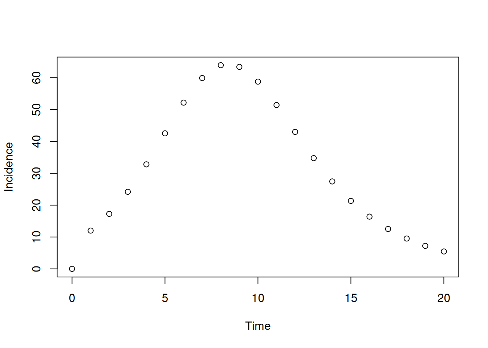

library(odin2)
library(dust2)2 On the nature of time
There are two main sorts of treatment of time within odin models:
Continuous time models, as seen in the previous chapter, are described in terms of a set of ordinary differential equations (ODEs). At any point in time we can compute the rates of change of our quantity of interest, and using that and some initial condition, we can generate a time-series of the quantity or quantities involved.
Discrete time models, which will be the focus of the next section, are both more basic and more complicated depending on how you approach them. We assume that the system takes steps of some size dt and our equations will describe how each variable is updated – how it changes from a value at time t to time t + dt. Sometimes this formulation is called a set of “recurrence equations”.
This seems like a small difference but it is quite profound.
- Often the same system can be expressed as either a set of ODEs or as a set of recurrence equations but the two methods will behave differently (see below)
- It is not knowable which formulation will be “faster”; ODE solutions must take more steps where the solution is complex in order to smooth it out, but at the same time can take very large steps where the solution is simple
- ODEs must be deterministic; a unique smooth solution exists. Discrete time models are free to be stochastic, as it does not really matter what happens between
tandt + dt
Note
If you have used odin version 1, then discrete time models had a different (though fundamentally equivalent) formulation of time. See the odin2 migration vignette for more details.
2.1 A simple example where time matters
Consider just about the simplest interesting “system” of ODEs, the logistic equation:
logistic_ode <- odin({
deriv(x) <- r * x * (1 - x)
initial(x) <- x0
x0 <- parameter(0.01)
r <- parameter(0.1)
}, debug = TRUE)
logistic_ode
#>
#> ── <dust_system_generator: odin_system> ────────────────────────────────────────
#> ℹ This system runs in continuous time
#> ℹ This system has 2 parameters
#> → 'x0' and 'r'
#> ℹ Use dust2::dust_system_create() (`?dust2::dust_system_create()`) to create a system with this generator
#> ℹ Use coef() (`?stats::coef()`) to get more information on parametersAs in Section 1.1, we can run this through time from its initial conditions:
sys <- dust_system_create(logistic_ode, list())
dust_system_set_state_initial(sys)
t <- seq(0, 100, by = 1)
y <- dust_system_simulate(sys, t)
plot(t, y[1, ], type = "l", xlab = "Time", ylab = "Population")Now, we write out a closely related system which uses discrete time; the “logistic map”
logistic_map <- odin({
update(x) <- r * x * (1 - x)
initial(x) <- x0
x0 <- parameter(0.01)
r <- parameter(1.1)
}, debug = TRUE)and run it:
sys2 <- dust_system_create(logistic_map, list())
dust_system_set_state_initial(sys2)
y2 <- dust_system_simulate(sys2, t)
plot(t, y[1, ], type = "l", xlab = "Time", ylab = "Population")
lines(t, y2[1, ], col = "red")Let’s write a function for this:
run <- function(r, sys, t) {
dust_system_update_pars(sys, list(r = r))
dust_system_set_time(sys, 0)
dust_system_set_state_initial(sys)
dust_system_simulate(sys, t)[1, ]
}We can run this function for some small values of r and see the population go extinct (black line) or grow to some stable value (red lines)
plot(t, run(0.5, sys2, t), col = "black", ylim = 0:1, type = "l",
xlab = "Time", ylab = "Population")
lines(t, run(1.5, sys2, t), col = "red")
lines(t, run(1.8, sys2, t), col = "red")
lines(t, run(2, sys2, t), col = "red")The equilibrium level of the discrete time system is not 0 or 1 (as in the continuous time version) but (r - 1) / r.
For larger values of r we start getting oscillations around the maximum, either decaying (blue lines) or stable (green line):
plot(t, run(2.1, sys2, t), col = "blue", ylim = 0:1, type = "l",
xlab = "Time", ylab = "Population")
lines(t, run(2.5, sys2, t), col = "blue")
lines(t, run(2.9, sys2, t), col = "blue")
lines(t, run(3.3, sys2, t), col = "green")Higher values bounce around chaotically:
plot(t, run(3.8, sys2, t), ylim = 0:1, type = "l",
xlab = "Time", ylab = "Population")None of these dynamics appeared in the continuous time version!
2.2 Variables that reset
Let’s revisit our simple SIR example from Section 1.1. Our model had just three compartments; S, I and R. These all represent prevalences, but frequently we are interested in incidences, for example the incidence of new infections or cases. This might be because we want to fit to data that are incidences, or it might just be that we want to run projections of a model and output incidences over time.
In some simple models it might be easy enough to extract incidences given outputs on all states of the model, but with increasingly complexity this calculation quickly becomes overly complicated or even impossible. Thus we support calculating incidences within your odin code.
Suppose that each time unit represents one day. We can declare incidence as a variable that resets every day by using the zero_every argument.
sir <- odin({
deriv(S) <- -beta * S * I / N
deriv(I) <- beta * S * I / N - gamma * I
deriv(R) <- gamma * I
deriv(incidence) <- beta * S * I / N
initial(S) <- N - I0
initial(I) <- I0
initial(R) <- 0
initial(incidence, zero_every = 1) <- 0
N <- parameter(1000)
I0 <- parameter(10)
beta <- parameter(0.2)
gamma <- parameter(0.1)
})If we were interested in weekly incidence we might choose to write
initial(incidence, zero_every = 7) <- 0or to work with time so that one unit represents a week rather than a day and scaling our rates accordingly.
Note
Variables reset on multiples of the value of zero_every, and it is not currently possible to have this offset. If zero_every = 7 the variable would reset only on multiples of 7 - so if you were dealing with weekly data, you would have to be careful to set time-zero in such a way that your weekly data aligns on multiples of 7!
When running this model we’ll see incidence produced:
pars <- list(beta = 1, gamma = 0.6)
sys <- dust_system_create(sir, pars)
dust_system_set_state_initial(sys)
t <- seq(0, 20, by = 0.05)
y <- dust_system_simulate(sys, t)
y <- dust_unpack_state(sys, y)
plot(t, y$incidence, type = "s", xlab = "Time", ylab = "Incidence")We have output at intervals of one 20th of a day, so we see 20 levels of incidence per day, with the last being the daily peak. If we output instead at intervals of one day, we only get those peaks corresponding to the daily incidence
sys <- dust_system_create(sir, pars)
dust_system_set_state_initial(sys)
t <- seq(0, 20)
y <- dust_system_simulate(sys, t)
y <- dust_unpack_state(sys, y)
plot(t, y$incidence, type = "p", xlab = "Time", ylab = "Incidence")
We will see that resetting variables works in a similar fashion for discrete-time models in Chapter 3.